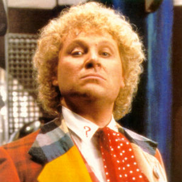

Portrayed by Colin Baker.
|  | Colin Baker was born in London, but moved north to Rochdale with his family early in his life. He was educated at St Bede's College, Manchester, and originally studied to become a solicitor. At the age of 23, Baker changed professions and enrolled at the London Academy of Music and Dramatic Art (LAMDA), where he studied alongside David Suchet. His mother is of Irish ancestry. |